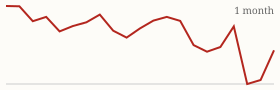
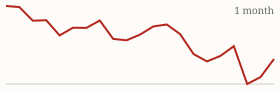

| Today's briefing for operators |
Top line: One bot org chart replaces 46 jobs |
|
| Tuesday, November 10, 2026 | Late Edition | Curated from 64 voices on X |
|
Real Estate
Cole Ruud-Johnson Says Bots Took His Team From 50 People to 4
He says his real estate business is more profitable than ever after rebuilding it as an org chart of AI bots, with one Chief of Staff bot at the top.
By @coleruudjohnson |
Cole Ruud-Johnson says he has cut headcount from 50 people to 4 using Grok Bot, and the business is more profitable than ever. He talks to one bot, a Chief of Staff, which manages a lead bot for each department, and each department runs three to five bots underneath it. |
His favorites are a CRM bot that handles pipelines, team activity, sales call reviews, KPIs and missed opportunities; a marketing bot for the website, reviews, SEO and credibility packets; and a relationships bot that reaches out to attorneys, lenders, agents and investors for free deal flow. The CEO lesson is to design the org chart first, give each bot one clear job, and keep people where judgment and seller conversations matter. |
|
| Read on X |
|
Mortgage Rates & Markets | Mortgage Rates Today's average lender rates | 30-year fixed | 7.18% | +0.01 | | 15-year fixed | 6.83% | +0.00 |
Daily change vs. prior day. Source: Mortgage News Daily, as of 11/9/2026 (updated weekdays about 4 PM ET). |
|
S&P 500 Close of Mon, Nov 9 S&P 500 7,549.94 ▲ +173.08 (+2.35%)  Yahoo Finance chart data (daily closes) |
|
Nasdaq Composite Close of Mon, Nov 9 Nasdaq Composite 25,253.14 ▲ +673.71 (+2.74%)  Yahoo Finance chart data (daily closes) |
|
| Real Estate & Deals | Listing showing an investor selling a rental at a loss. Image via @nickgerli1 on X Investors Are Now Selling Rentals at a Loss By @nickgerli1 Nick Gerli flags a 2022 Nashville-area rental bought for $377,000 now listed at $345,000, a loss closer to $50,000 after fees. Flat rents, rising costs and Treasury yields above cap rates are pushing landlords to sell, and he figures a 5% cap rate needs about $275,000. Read on X |
Underwater FHA Sellers Are Piling Up By @Jacob_Naviaux Jacob Naviaux describes a 2022 buyer with a $241,250 FHA loan who can't sell at $260,000 because the house is now worth $185,000. Short sales and foreclosures like this are happening in many parts of the country, which means more distressed sellers to talk to. Read on X |
Email from a buyer's agent at a final walkthrough. Image via @Jacob_Naviaux on X Hold the Line When an Agent Plays the Guilt Card By @Jacob_Naviaux Naviaux shares an email from a buyer's agent who pushed unreasonable demands at a final walkthrough, then tried guilt. His answer stayed firm, professional and factual, a good model for how your dispo team handles late renegotiation. Read on X |
| AI Briefing | Claude Fable 5.2 and Mythos 5.2 announcement video. Image via @claudeai on X Anthropic Launches Claude Fable 5.2 and Mythos 5.2 By @claudeai Anthropic's new models target the hardest technical work, with gains in coding, reasoning and vision. Early users call Fable 5.2 the best model they've used, though it burns through usage limits fast. Read on X |
Anthropic Starts Its IPO Roadshow By @AnthropicAI Anthropic says it has launched the roadshow for its proposed initial public offering; its registration statement with the SEC is filed but not yet effective. Read on X |
Muse Ember announcement. Image via @AIatMeta on X Meta's Muse Ember: A Small, Cheap Agent Model By @AIatMeta Meta's smallest, most efficient model can carry workflows across apps, call tools in sequence and fix code, with a 1M-token context window. It's also coming to Google Cloud. Read on X |
ChatGPT Dots Can Now Run on Multiple Computers By @OpenAIDevs OpenAI says you can connect several local computers to the same dot and choose which one runs a task, so an agent can build and test on a dedicated machine while you keep working. Read on X |
Gemini 4 Carbon Looks Set to Launch Today By @testingcatalog Gemini 4 Carbon now appears in Google Cloud's catalog, and watchers expect it today, with Grok 4.8 reportedly due later this week. Read on X |
Diamandis: The Data Center Backlash Is Good for AI By @PeterDiamandis Peter Diamandis says pushback forces builders to design for their neighbors, with quieter cooling, their own power and a share of the tax base, and to show everyday Americans why to trust the technology. Read on X |
| Business & Leadership | Income Scales With Your Intolerance of Mediocrity By @AlexHormozi Alex Hormozi says your income grows in direct proportion to how little you tolerate mediocrity, delay and the status quo. For a CEO, that means setting the standard and acting quickly when it slips. Read on X |
Same Properties, Better Tenants, Different Hire By @Jacob_Naviaux Naviaux swapped property managers for a leasing agent he hired this year. Her two placements pay on time and are easy to work with, because she screens for the person, not just to fill the unit. The person doing the screening changes the outcome. Read on X |
Hire the People Who Say 'That's on Me' By @danmartell Dan Martell says never underestimate someone who can say "that's on me." Ownership is the trait to hire for and to model from the top. Read on X |
|
The Hyre Times is compiled each morning by Groky from public posts on X plus public rate and market data. Summaries reflect the authors' own claims and have not been independently verified. Not financial advice. © 2026 Hyre Times. |
|